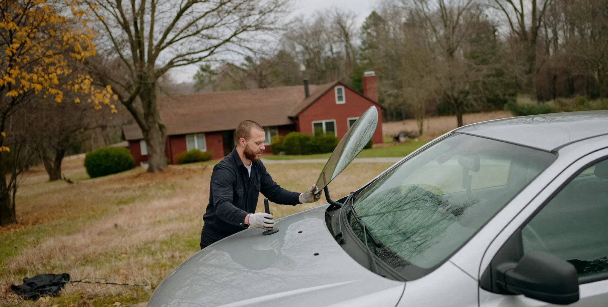
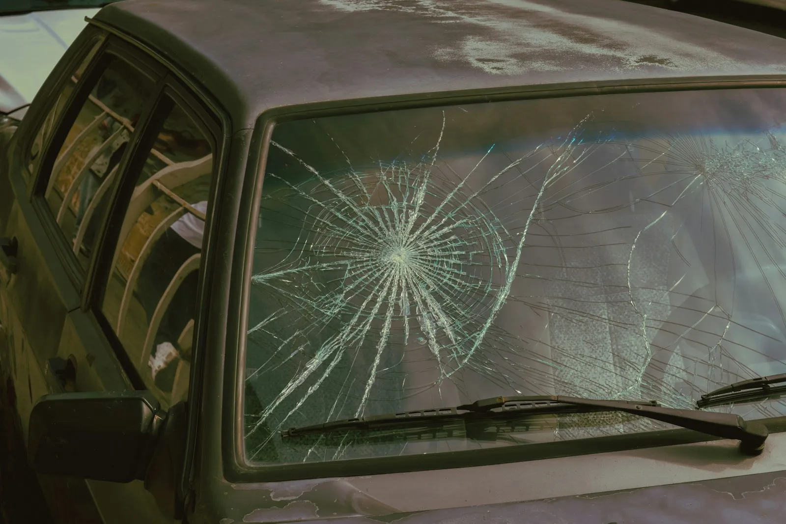

Auto Glass Repair in Wichita, KS
Windshield replacement, rock chip repair and side or back glass, done in your driveway or work lot. Call with your year, make and model and get a quote on the spot.
Get a Free Estimate
Tell us what you need and we’ll call you back the same working day.
Prefer to talk? Call (316) 669-4751
What Is Auto Glass Repair in Wichita?
Auto glass repair in Wichita covers anything that keeps you from seeing out of your car clearly: rock chips, cracks that spread across the windshield, and broken side or back windows. We fix chips with resin, replace windshields that are past saving, and swap out door and rear glass after a break-in or a stray baseball.
Most of our calls come from people who drive the highways every day. A gravel truck on K-96 or a construction zone on I-235 throws a stone, and a week later the chip has turned into a line. Others come after a spring storm, when hail leaves a windshield looking like a spiderweb.
If you're not sure whether your glass can be saved, call (316) 669-4751 and describe it. That's usually enough for a first answer.

When Do You Need Windshield Repair or Replacement?
Here are the situations that bring most Wichita drivers to us:
- A fresh rock chip. Small chips can be filled with resin if you act before dirt and moisture get in. Wichita's freeze-thaw swings in late fall and winter turn chips into cracks fast.
- A crack longer than a dollar bill. Once a crack runs past about six inches, a windshield replacement is the safe fix.
- Hail damage. Wichita sits in the middle of the Kansas hail belt. Storms from April through June can pit or shatter glass in seconds.
- A broken side or rear window. Tempered glass breaks into small cubes. You need a replacement and a full vacuum of the door panel and carpet.
- A camera or sensor warning. If your lane-keep or forward-collision warning acts strange after glass work, the camera needs calibration.
A question we hear a lot: "Can I wait until my next oil change?" For a chip, a few days is fine. For a crack in front of the driver, it's better not to wait. Read more about rock chip repair in Wichita.
How Mobile Auto Glass Service Works in Wichita
- Call or send photos. Give us your year, make, model and VIN if you have it. The VIN tells us which glass and which camera mount your car uses.
- We order the correct glass. OEM or OEM-equivalent glass with the right tint band, rain sensor bracket and heating elements.
- We come to you. A technician shows up at your home in Riverside or College Hill, your office downtown, or a job site in Park City.
- Old glass comes out, new glass goes in. We cut the old urethane, clean and prime the frame, lay a new bead and set the windshield with suction cups.
- Calibration and cure time. If the car has ADAS cameras, we calibrate them. Then the adhesive cures for about an hour before you drive.
Chip repairs are quicker: about 30 minutes, and you can drive away right after.
Why Wichita Drivers Choose Us for Auto Glass
- We tell you when a repair is enough. Sometimes a chip repair your policy fully covers beats a new windshield. If resin will do the job, we say so.
- We handle the camera, not just the glass. A lot of cars on Wichita roads now have a camera behind the mirror. We check for it before we quote and calibrate it after the install.
- We work around your day. Our technicians do windshield replacement in driveways, apartment lots and work lots, from Maize to Derby. You don't lose a morning at a shop.
One honest note: when it's windy, raining hard or below freezing, urethane doesn't bond well outdoors. On those days we'll reschedule rather than rush an install. Nobody enjoys a rain delay, but a leaky windshield is worse.
How Much Does Auto Glass Repair Cost in Wichita?
We don't post flat prices because two cars that look alike can need very different glass. Here's what changes the quote for windshield replacement in Wichita:
- Your vehicle. A 2012 work truck and a 2023 SUV use very different windshields.
- Features in the glass. Rain sensors, heated wiper areas, acoustic layers and heads-up displays all change the part.
- ADAS calibration. If your car has a forward camera, calibration is added to the job.
- OEM vs. equivalent glass. Factory-brand glass and OEM-equivalent glass are priced differently.
- Insurance. With comp coverage, you may only pay your deductible, and many insurers waive it for chip repair.
Want an exact number? Call (316) 669-4751 with your VIN and we'll give you a written quote, usually in a few minutes.
Is Mobile Windshield Service Right for You?
Mobile service is a good fit if your car is drivable, you have a flat, dry spot to park, and you'd rather keep your day than sit in a waiting room. It works well for commuters, parents with a full schedule, and businesses with a few work trucks.
It's not the best fit if the car can't be parked out of heavy weather, or if the frame around the glass is badly rusted or bent from a crash. In those cases the car may need body work first, and we'll tell you that up front.
Not sure? Send a photo through our Wichita auto glass contact form and we'll call you back.
Frequently Asked Questions
Does insurance cover windshield replacement in Wichita?
Usually, yes. In Kansas, glass damage from hail, rocks and road debris falls under the comp (other-than-collision) part of an auto policy, not collision. What you pay out of pocket depends on your comp deductible, so call us with your policy handy and we can help you start the glass claim.
Can a rock chip be repaired instead of replacing the windshield?
Often it can. A chip smaller than a quarter, or a single crack under about six inches, can usually be filled with resin in Wichita in about 30 minutes. Damage in the driver’s line of sight or at the edge of the glass usually means a full windshield replacement.
Is it illegal to drive with a cracked windshield in Kansas?
Kansas statute 8-1741 bars driving with a windshield damaged badly enough to block the driver’s view, and officers decide what counts. A small chip low on the passenger side rarely draws a stop, but a long crack across the driver’s side can. If you drive Kellogg or I-135 every day, getting it fixed is the safer bet.
How long does windshield replacement take in Wichita?
Most windshield replacements in Wichita take 60 to 90 minutes from the time the technician arrives. After that, the urethane adhesive needs time to cure before the car is safe to drive, usually about an hour. Cars with lane-keep cameras may need extra time for ADAS calibration.
Do you come to my home or work in Wichita?
Yes. We are a mobile auto glass service, so we replace windshields and repair chips in driveways and parking lots across Wichita, Derby, Andover, Maize and nearby towns. We need a dry, flat spot and a few feet of room around the car.
Why does my windshield need calibration after replacement?
Many newer cars mount a forward camera behind the windshield for lane-keep assist, automatic braking and adaptive cruise. When the glass is replaced, that camera can sit a fraction of a degree off, and the car may read the road wrong. Calibration resets the camera so those safety features in your Wichita commute work the way the maker intended.
Where We’re Based
926 N Water St Suite 3, Wichita, KS 67203
Please note: This is our service business address, not a storefront or showroom. Wichita Auto Glass Repair is a mobile auto glass service, so we come to you anywhere in Wichita and the office isn’t open to walk-in visitors. Call us and we’ll set up a free quote.
Cracked glass in Wichita? Get it handled this week.
Call and tell us the year, make and model. We’ll give you a straight quote and a time slot.